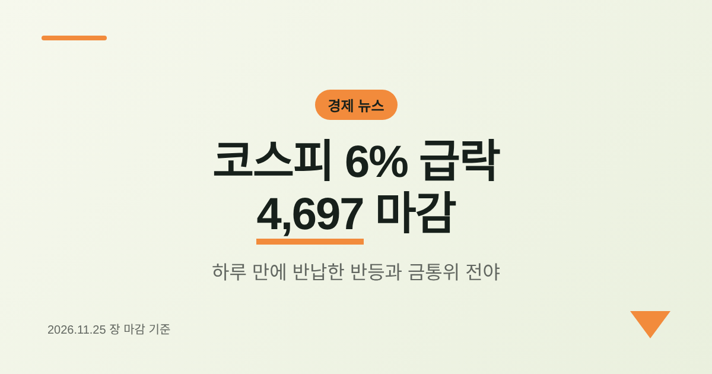
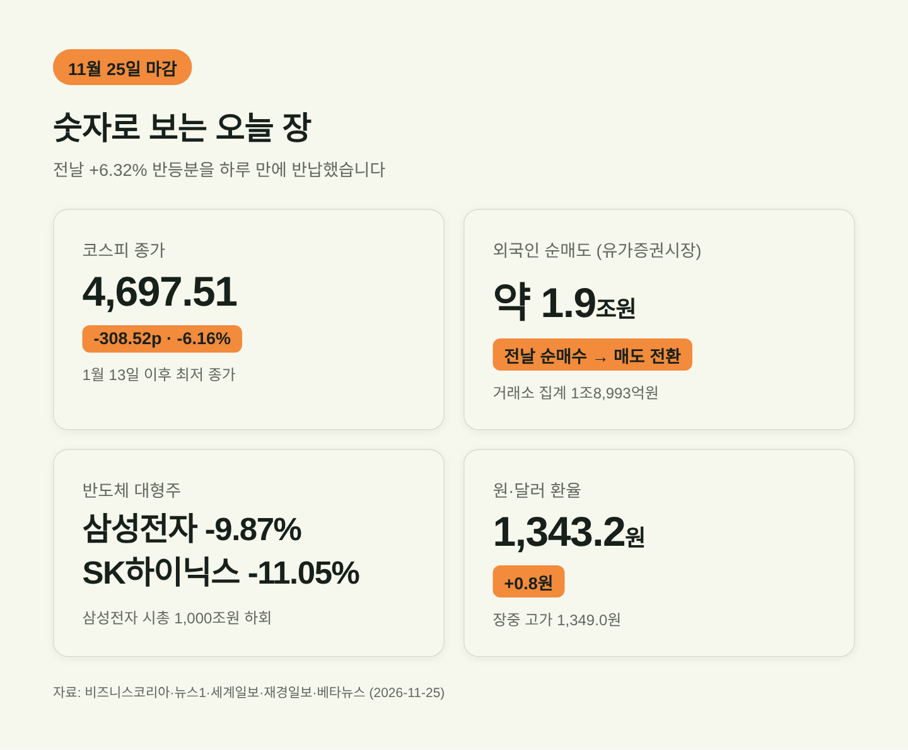
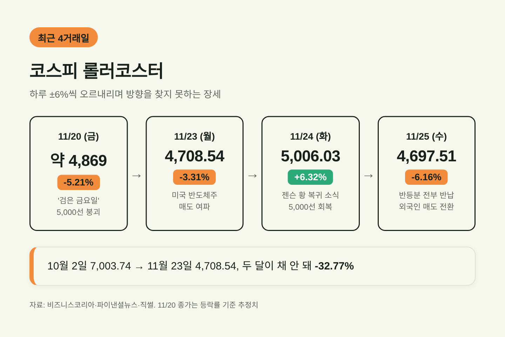
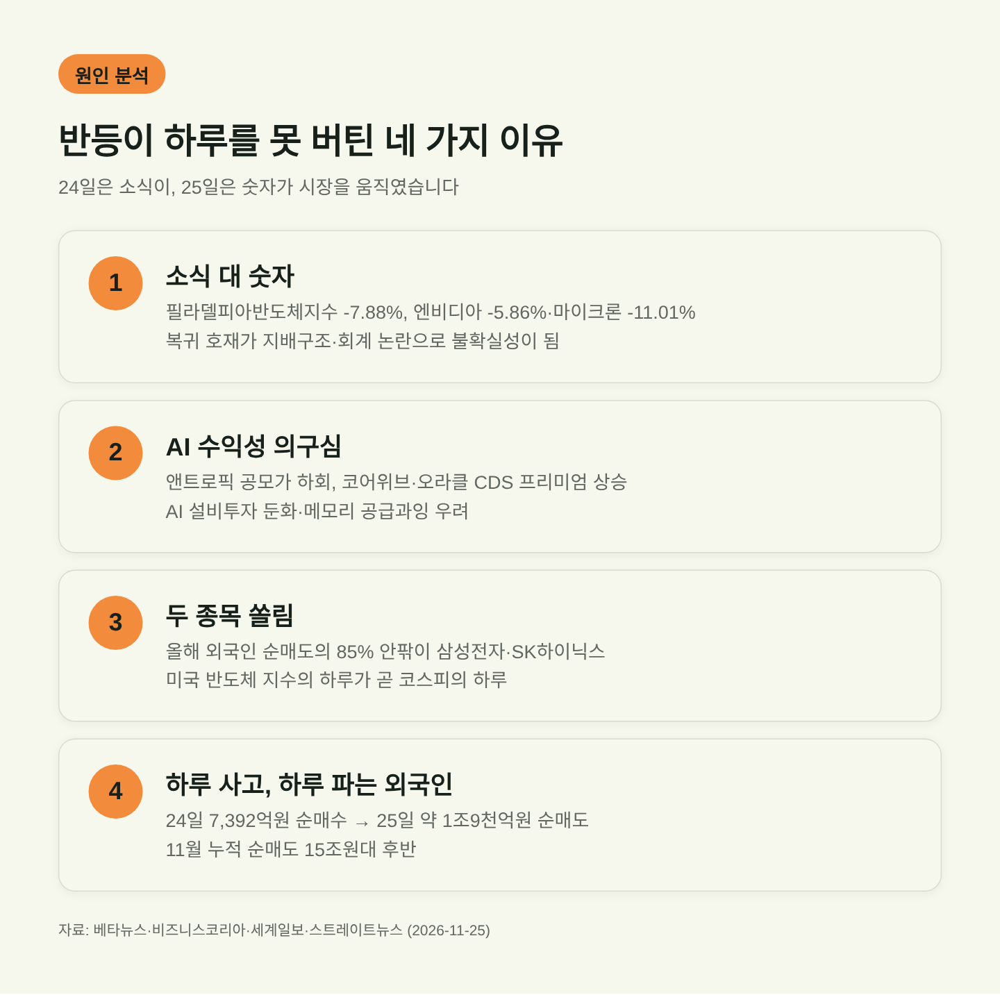
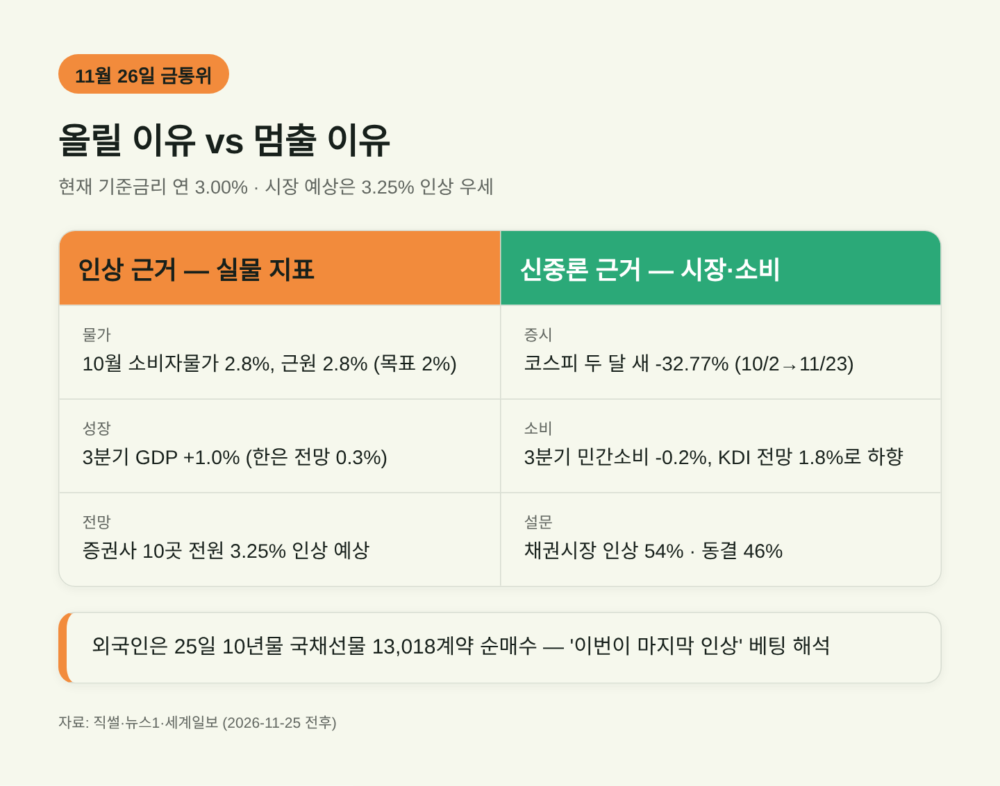
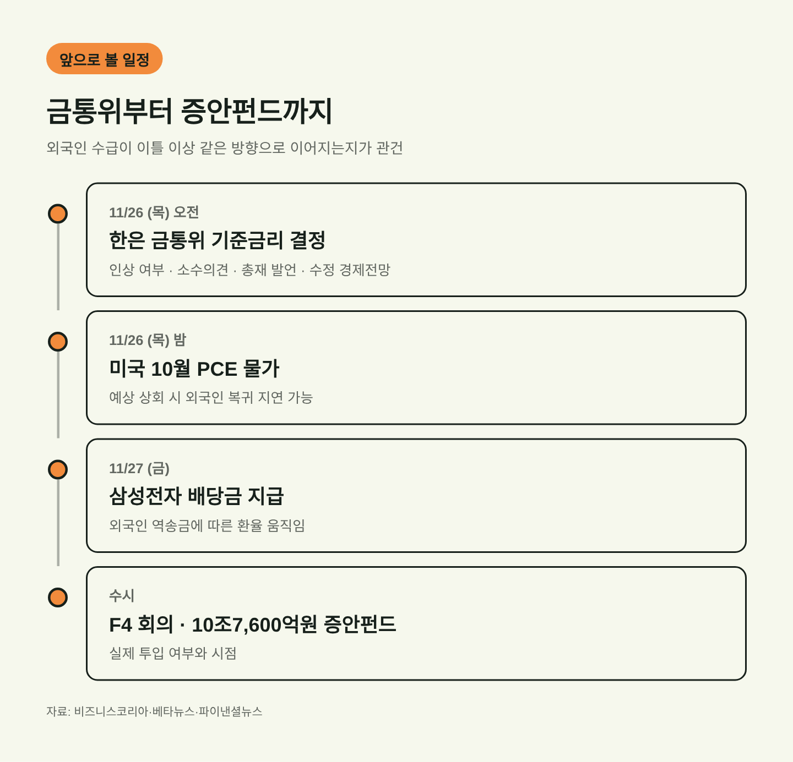

코스피 6% 급락 4,697 마감, 하루 만에 반납한 반등과 금통위 전야

이번 글에서는 11월 25일 코스피 급락을 정리해 보겠습니다. 전날 되찾은 5,000선이 왜 하루를 못 버텼는지, 그리고 내일 열리는 금통위에 이 급락이 어떤 숙제를 남겼는지를 차례로 살펴봅니다.
3줄 요약
- 코스피가 6.16% 내린 4,697.51로 마감했습니다. 전날 6.32% 오른 몫을 하루 만에 모두 내줬습니다.
- 미국 반도체주 급락과 AI 수익성 의구심 속에 외국인이 약 1조9천억원을 팔았고, 삼성전자·SK하이닉스가 10% 안팎 밀렸습니다.
- 내일(26일) 금통위는 물가·성장만 보면 인상, 증시·소비를 보면 신중론이 힘을 얻는 갈림길에 섰습니다.
■ 무슨 일이 있었나 — 오늘 장의 숫자
11월 25일(수) 코스피는 308.52포인트 내렸습니다. 종가는 4,697.51, 하락률은 6.16%입니다.
전날인 24일, 엔비디아 젠슨 황 CEO의 복귀 소식에 지수는 6.32% 뛰어 5,006.03이 됐습니다. 그 상승분이 고스란히 사라진 셈입니다. 종가 기준으로는 1월 13일(4,692.64) 이후 약 10개월 만에 가장 낮습니다.
장은 4,809.00으로 출발했습니다. 개장 8분 만에 매도 사이드카가 걸렸고, 올해 들어 33번째였습니다. 장중 한때 4,672.55(-6.66%)까지 내려갔습니다. 유가증권시장에서 내린 종목은 594개, 오른 종목은 295개였습니다.
| 항목 | 11월 25일 마감 |
|---|---|
| 코스피 | 4,697.51 (-308.52p, -6.16%) |
| 장중 저점 | 4,672.55 (-6.66%) |
| 코스닥 | 650.64 (-15.24p, -2.29%) |
| 외국인 | 약 1조9천억원 순매도 (거래소 집계 1조8,993억원) |
| 개인 | 약 1조4,200억원 순매수 |
| 기관 | 보합 수준 |
| 원·달러 환율 | 1,343.2원 (+0.8원) |

■ 왜 중요한가 — '하루 만의 반납'이 보내는 신호
하루 떨어진 것만 보면 놓치는 것이 있습니다. 최근 네 거래일의 궤적을 함께 봐야 합니다.
| 날짜 | 코스피 종가 | 등락률 | 무슨 일이 |
|---|---|---|---|
| 11/20(금) | 약 4,869 | -5.21% | '검은 금요일', 5,000선 붕괴 |
| 11/23(월) | 4,708.54 | -3.31% | 미국 반도체주 매도 여파 |
| 11/24(화) | 5,006.03 | +6.32% | 젠슨 황 복귀 소식, 외국인 7,392억원 순매수 |
| 11/25(수) | 4,697.51 | -6.16% | 반등분 전부 반납, 외국인 매도 전환 |

하루에 6%씩 위아래로 움직이는 장은 흔치 않습니다. 이런 흐름은 바닥을 다졌다기보다 방향을 아직 정하지 못했다는 쪽에 가깝습니다.
시야를 넓히면 낙폭은 더 큽니다. 직썰 집계에 따르면 코스피는 10월 2일 7,003.74에서 11월 23일 4,708.54까지 32.77% 내렸습니다. 같은 기간 시가총액은 약 1,914조원 줄었습니다. 두 달 전엔 7,000선을 바라보던 시장이, 지금은 4,700선을 지키는 일에 매달리고 있습니다.
변동성 지표도 같은 말을 합니다. 11월 6일에는 장중 8% 넘게 빠지며 서킷브레이커가 걸렸고, 25일 매도 사이드카까지 올해 사이드카는 62번 발동됐습니다.
■ 배경 — 반등이 하루를 못 버틴 네 가지 이유

1. 반등의 재료는 소식, 하락의 재료는 숫자
24일 반등을 이끈 것은 젠슨 황 복귀라는 소식이었습니다. 하루 뒤 미국 시장이 보여준 것은 숫자였습니다. 필라델피아반도체지수가 7.88% 떨어졌습니다. 엔비디아(-5.86%), AMD(-8.86%), 마이크론(-11.01%)이 함께 밀렸습니다.
복귀를 둘러싼 이사회 결정 번복, 지배구조 논란, 회계 조사, 미 의회 청문회 가능성도 겹쳤습니다. 호재로 읽혔던 소식이 오히려 불확실성으로 바뀐 것입니다.
2. AI가 정말 돈을 버느냐는 질문
앤트로픽이 상장 뒤 공모가 아래로 내려갔습니다. 코어위브·오라클의 신용부도스와프(CDS) 프리미엄도 올랐습니다. CDS 프리미엄은 쉽게 말해 '부도 위험에 대한 보험료'입니다. 여기에 AI 설비투자 둔화, 메모리 공급과잉 경고가 더해졌습니다.
대신증권 이경민 연구원은 AI 투자와 자금 조달에 대한 시장의 경계심이 다시 커지며 반도체 주도주 매도로 이어졌다고 분석했습니다(비즈니스코리아).
3. 지수의 무게가 두 종목에 쏠려 있다
삼성전자는 9.87% 내린 170,700원, SK하이닉스는 11.05% 내린 103만원에 마감했습니다. SK스퀘어(-11.19%), 삼성전기(-12.00%)도 크게 밀렸습니다.
삼성전자 시가총액은 997조9,598억원이 됐습니다. 약 8개월 만에 1,000조원 아래로 내려간 것입니다.
올해 외국인 순매도는 약 223조~225조원에 이릅니다. 이 가운데 85% 안팎이 두 종목에 몰렸다는 집계가 있습니다. 지수가 두 종목에 이만큼 기대고 있으면, 미국 반도체 지수의 하루 등락이 곧 코스피의 방향이 됩니다.
4. 하루 사고, 하루 파는 외국인
외국인은 24일 7,392억원어치를 샀습니다. 25일에는 약 1조9천억원어치를 팔았습니다. 11월 누적 순매도는 15조원대 후반입니다.
개인이 1조4천억원 넘게 받아냈지만 외국인 물량을 다 받지는 못했습니다. 기관은 거의 움직이지 않았습니다.
모든 종목이 내린 것은 아닙니다. 삼성바이오로직스(+5.66%), 셀트리온(+3.83%) 같은 바이오주와 화장품주는 올랐습니다. 반도체에서 빠진 돈 일부가 방어적인 업종으로 옮겨 가는 모습입니다.
■ 쟁점 ① — 정부의 카드, 증안펀드는 언제 나오나
정부는 11월 22일 긴급회의를 열었습니다. 10조7,600억원 규모 증권시장안정펀드(증안펀드) 가동 준비에 들어갔습니다. 실제 투입 여부는 기획재정부·한국은행·금융위원회·금융감독원, 이른바 F4가 시장을 보며 정합니다. 실제로 주식을 사들이면 2008년 이후 약 18년 만입니다.
참고가 되는 장면은 2020년입니다. 당시에는 투입을 결정했지만 시장이 먼저 반등해 실제 매입이 미뤄졌습니다(파이낸셜뉴스). 이번에도 24일 반등 때 투입론이 잠시 잦아들었습니다. 하루 만에 지수가 4,600대로 돌아오면서 F4의 판단이 다시 주목받고 있습니다.
기업들도 움직이고 있습니다. 자사주 매입 규제가 완화된 뒤 11월 자사주 취득 공시는 72건으로, 지난해 같은 기간(26건)의 2.8배였습니다(세계일보).
다만 한계도 분명합니다. 증안펀드와 자사주 매입은 급락의 속도를 늦출 수는 있어도, 미국 반도체 지수와 외국인 수급이라는 근본 변수를 바꾸지는 못합니다.
■ 쟁점 ② — 금통위 전야, 올릴 이유와 멈출 이유
내일(11월 26일, 목) 한국은행 금융통화위원회가 기준금리를 정합니다. 현재 기준금리는 연 3.00%입니다. 7·8월에 올린 뒤 10월에는 동결했습니다.

올릴 이유는 실물 지표에 있습니다.
- 10월 소비자물가 상승률은 2.8%, 근원물가도 2.8%로 목표(2%)를 웃돕니다.
- 3분기 실질 GDP는 전기 대비 1.0% 늘어 한은 전망(0.3%)을 크게 넘었습니다.
- 뉴스1이 증권사 10곳에 물은 결과, 모두 이번 달 3.25% 인상을 예상했습니다. 9곳은 내년 3.50%까지 본다고 답했습니다.
멈출 이유는 금융시장과 소비에 있습니다.
- 코스피가 두 달이 채 안 돼 30% 넘게 빠졌습니다.
- 3분기 민간소비는 전기 대비 0.2% 줄었고, KDI는 민간소비 전망을 1.8%로 낮췄습니다.
- 직썰이 전한 채권시장 설문에서는 인상 54%, 동결 46%로 의견이 팽팽했습니다.
눈여겨볼 신호가 하나 더 있습니다. 25일 외국인은 주식을 팔면서 국채선물은 대거 샀습니다. 10년물 국채선물 순매수(13,018계약)는 6월 이후 가장 많았습니다(세계일보). 이를 두고 이번 인상이 사이클의 마지막이라는 데 돈을 걸었다는 해석이 나옵니다.
반대 시각도 있습니다. 하나증권 측은 한은이 그동안 주가보다 수출 물가나 D램 가격 같은 실물 지표를 더 중시해 왔다고 짚었습니다. 증시 급락만으로 긴축이 끝나기는 어렵다는 진단입니다.
결국 내일 볼 것은 인상 여부만이 아닙니다. 동결 소수의견이 나오는지, 총재 기자회견에서 금융시장 불안이 얼마나 언급되는지, 새 경제전망이 어떻게 바뀌는지가 다음 흐름을 가를 가능성이 큽니다.
■ 이해관계 — 환율과 가계 지갑
증시가 6% 빠진 날, 원·달러 환율은 0.8원 오른 1,343.2원에 마감했습니다. 장중 1,349.0원까지 올랐지만 수출업체의 달러 매도와 1,350원 부근 경계감이 상단을 막았습니다.
숫자는 조용했지만 압력은 남아 있습니다. 증시 약세, 유가 상승(브렌트유 +2.27%), 27일 삼성전자 배당금 지급을 앞둔 외국인 역송금 가능성이 대표적입니다(베타뉴스).
가계가 가장 먼저 느낄 부분은 대출 이자입니다. 10월 신규 취급액 기준 코픽스는 3.62%로, 두 달 새 0.44%포인트 올랐습니다(직썰). 기준금리가 오르면 변동금리 대출 이자는 시차를 두고 더 오를 수 있습니다. 주식 평가손에 이자 부담까지 겹치는 '이중 압박'이 지금 가장 현실적인 위험입니다.
■ 전망 — 앞으로 볼 지표와 일정

| 일정 | 내용 | 볼 포인트 |
|---|---|---|
| 11/26(목) 오전 | 한은 금통위 기준금리 결정 | 인상 여부, 소수의견, 총재 발언, 수정 경제전망 |
| 11/26(목) 밤 | 미국 10월 PCE 물가 | 예상보다 높으면 외국인 복귀가 늦어질 수 있음 |
| 11/27(금) | 삼성전자 배당금 지급 | 외국인 역송금에 따른 환율 움직임 |
| 수시 | F4 회의·증안펀드 | 실제 투입 여부와 시점 |
| 매일 | 필라델피아반도체지수·엔비디아 | 코스피 방향을 사실상 정하는 변수 |
이런 장에서는 하루 등락에 일희일비하기보다 두 가지를 보시길 권합니다. 외국인 수급이 이틀 이상 같은 방향으로 이어지는지, 그리고 사이드카 같은 극단적 변동이 잦아드는지입니다.
정리하면 이렇습니다. 24일의 반등은 소식이 만들었고, 25일의 급락은 숫자가 만들었습니다.
"소식으로 오른 장은 숫자에 다시 시험받는다."
내일 금통위가 그 숫자 중 하나를 더 보탭니다. 시장이 이번에는 버텨낼 수 있겠느냐고 물으신다면, 그 답은 금리 결정 그 자체보다 그 뒤에 붙을 말에 달려 있다고 생각합니다.
본 글은 공개된 언론 보도를 바탕으로 정리한 정보 제공 목적의 글이며, 특정 종목이나 자산에 대한 투자 권유가 아닙니다. 투자 판단과 그 결과의 책임은 투자자 본인에게 있습니다. 수급 금액은 집계 기준(넥스트레이드 포함 여부 등)에 따라 매체별로 다소 다를 수 있습니다.
참고자료
- 세계일보, 「파랗게 질린 코스피 4697 마감… "바닥 안 보여" 개미들 패닉」 (2026-11-25) — https://www.segye.com/newsView/20261125515667
- 재경일보, 코스피 마감 기사 (2026-11-25) — https://news.jkn.co.kr/post/1122161
- 베타뉴스, 원·달러 환율 마감 기사 (2026-11-25) — https://www.betanews.net/article/view/beta202611250140
- 비즈니스코리아, 「[마감시황] '젠슨 황 랠리' 하루 만에 증발…외국인 1.9조 폭탄 매도에 코스피 4,600선 추락」 (2026-11-25) — https://www.businesskorea.co.kr/news/articleView.html?idxno=282198
- 뉴스1, 「'젠슨황 1일 천하' 코스피 4600선 후퇴…외인 1.9조 순매도」 (2026-11-25) — https://www.news1.kr/finance/market-exr/6365864
- 스트레이트뉴스, 「外人 코스피 순매도 225조 누적…전년 대비 30배」 (2026-11-25) — https://www.straightnews.co.kr/news/articleView.html?idxno=316228
- 파이낸셜뉴스, 「코스피 5천 회복에도 10.7조 증안펀드 준비 계속…투입 여부 F4가 결정」 (2026-11-25) — https://www.fnnews.com/news/202611250551182312
- 뉴스1, 「"한은, 26일 기준금리 인상" 한목소리…10곳 중 9곳 "내년 3.50%" [금통위 폴]」 — https://www.news1.kr/economy/trend/6361408
- 직썰, 「[금융 직썰] 물가는 뛰고 증시는 흔들…한은, 연말 금리 인상 기로」 (2026-11-25) — https://www.ziksir.com/news/articleView.html?idxno=154466
- SBS Biz, 「'검은 금요일' 코스피 6% 폭락…5000선 턱걸이로 마감」 (2026-11-06) — https://biz.sbs.co.kr/amp/article/20000344817